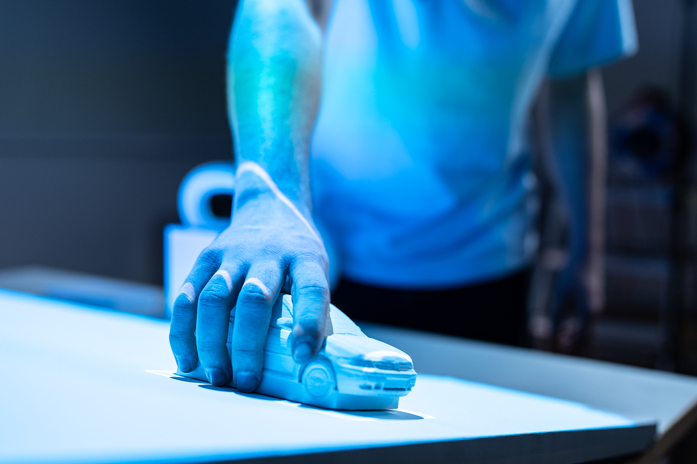
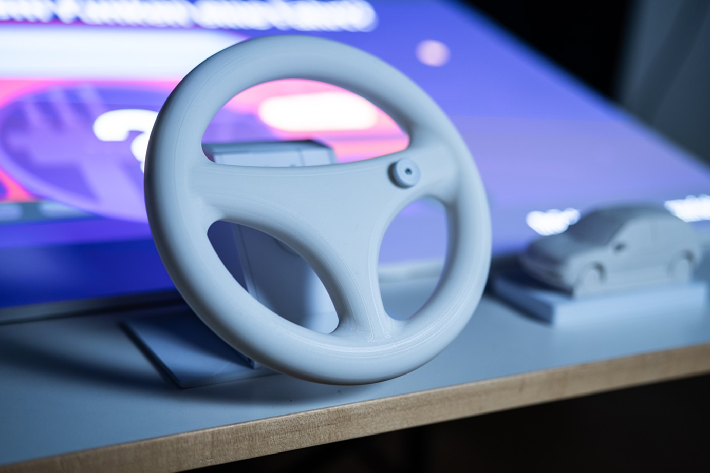
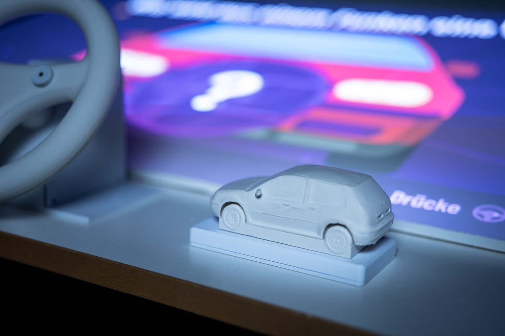
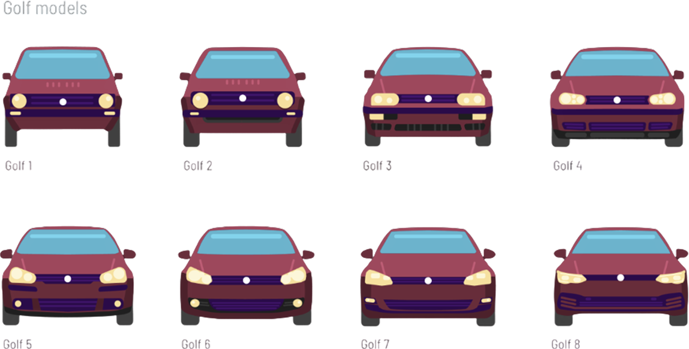
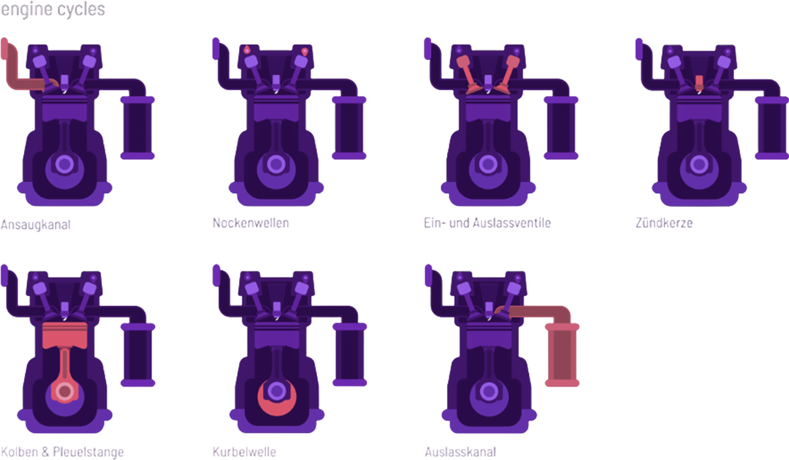
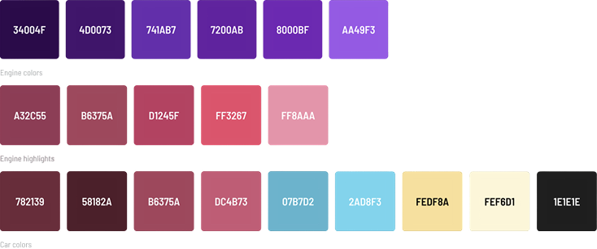

Drive
Die meisten Menschen fahren heutzutage Auto, doch die wenigsten wissen, wie ein Auto funktioniert. Wie wird aus einem Funken eine Fahrt? Diese Frage beantworten wir in unserem Projekt anhand moderner Mittelklassewagen, wobei die VW Golf Modelle im Vordergrund stehen.

Konzept, Interaction Design, Interface Design
WiSe 25/26
Figma, Prototyping, 3D-Druck, Beamer-Setup
Herausforderung
Ziel des Projekts war es, technische Zusammenhänge rund um moderne Fahrzeuge so aufzubereiten, dass sie für ein breites Publikum verständlich und spannend werden. Die Herausforderung bestand darin, komplexe Inhalte nicht rein textlich zu erklären, sondern in eine interaktive Ausstellung zu übersetzen, die Neugier weckt und Wissen niedrigschwellig vermittelt.

Erkenntnisse
In der Konzeption wurde deutlich, dass technische Inhalte besonders dann zugänglich werden, wenn Besucher:innen sie aktiv erkunden können. Deshalb wurden zwei physische Interaktionsformen entwickelt, die das Thema Auto direkt aufgreifen: Ein echtes Lenkrad dient als vertrautes Steuerelement für die Navigation durch die Inhalte, während ein 3D-Automodell gezielt auf markierten Flächen platziert werden kann, um einzelne Motorbestandteile aufzurufen. Beide Elemente machen das Thema nicht nur verständlicher, sondern schaffen auch eine direkte, intuitive Verbindung zwischen Inhalt und Interaktion.


Desingansatz
Gestalterisch orientiert sich das Projekt an Formaten wie Kurzgesagt, die komplexe Themen durch reduzierte Visuals, klare Farbwelten und einfache Animationen verständlich machen. Ziel war eine visuelle Sprache, die technisch wirkt, ohne überladen zu sein, und Informationen klar strukturiert. So entstanden ein reduziertes Interface, eine prägnante Farbpalette, einfache Illustrationen und animierte Inhalte, die den Motor Schritt für Schritt erklären und den Ausstellungsstand visuell zusammenhalten.



Ergebnis
Das Ergebnis ist ein interaktiver Lern- und Ausstellungsstand, der technische Inhalte anschaulich, körperlich und visuell erfahrbar macht. Durch die Verbindung von Projektion, physischen Objekten und schrittweiser Informationsvermittlung entsteht eine Ausstellung, die Wissen nicht nur zeigt, sondern aktiv erforschen lässt.